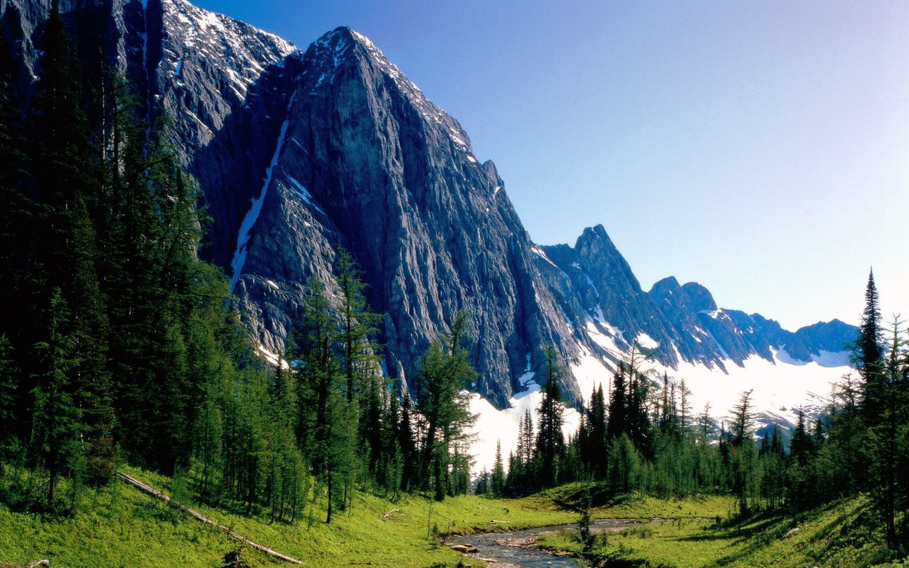

В лесах Канады расположены на большей части страны. Примерно половина Канады покрыта лесами, общая площадь которых составляет около 2,4 миллиона км 2 (0,93 миллиона квадратных миль). Более 90% канадских лесов находятся в государственной собственности ( земли короны и провинциальные леса ). Около половины лесов отведено под рубки . Именованные леса находятся в восьми различных регионах. Эти леса также могут быть частью экосистем, некоторые из которых простираются на юг в Соединенные Штаты . Например, северные лиственные леса - это экосистема, расположенная на обширных территориях юго-востока и юга центральной Канады, а также в Онтарио и Квебеке . Эта система простирается с юга на запад и даже в Соединенные Штаты.Лесные ресурсы - одно из основных богатств Канады (10% общей лесопокрытой площади планеты), они занимают 45% ее территории. Поэтому лесозаготовки ведутся практически во всех провинциях и территориях Канады, однако 40% канадской деловой древесины поставляет одна провинция - Британская Колумбия. К промышленным, или товарным, относится 235 млн. га лесов из 418 млн. га всей лесопокрытой площади; каждый год лесозаготовки осуществляются на территории около 1 млн. га. Важно отметить, что лесное хозяйство в целях лесозаготовок ведется только на территории 119 млн. га, или 28, 5% лесопокрытой территории. Много в Канаде так называемых открытых лесов на болотах, скалистых и других бесплодных землях, а также редколесий - они занимают примерно 37% всей лесопокрытой площади, все остальные продуктивные леса находятся либо в труднодоступных местах, либо на территории охраняемых национальных и провинциальных парков.
